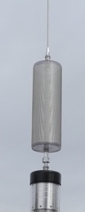
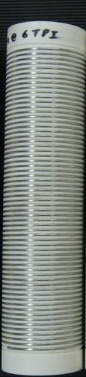
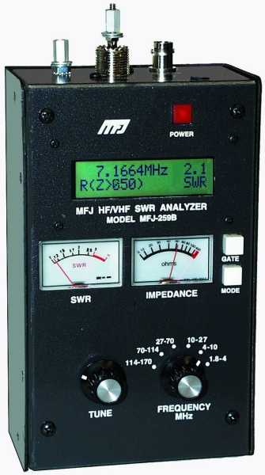
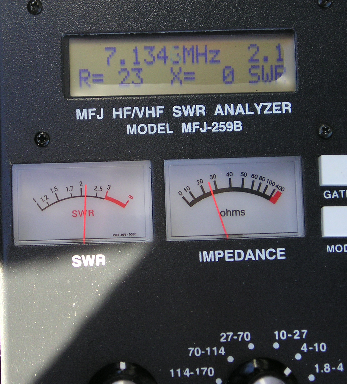

Basics
There is so much misinformation floating on the Internet about antennas in general, and mobile antennas specifically, it is not surprising many newcomers are confused. And for some, it is easier to believe myth than a factual explanation. If you're not one of them, and you want to have a better understanding of antennas — particularly HF mobile antennas — the real key is to learn the theory behind them. The best way to do this is to buy yourself an ARRL Handbook and start reading.
Some of the terms used in this article are the same as those explained in the Antenna Efficiency article, which should be read first. And remember: myths die hard.

The Band Coverage Myth
Advertising hype to the contrary, it is difficult to design a remotely-tuned antenna to cover 80 through 10 meters, much less adding 160 and 6 meters to the mix. A full-length 1/4 wave, unloaded antenna for 6 meters is about 54 inches long — approximately the same length as the base/coil assembly of most screwdriver antennas. On 10 meters, a full-length 1/4 wave antenna is about 96 inches long, and depending on the brand, covering 10 and 12 meters may require installing a shorter whip. When it doesn't, it means the overall losses are higher than they should be.
Any 160-meter mobile antenna will have very poor efficiency, perhaps as low as 0.3%, with a good one perhaps reaching 1%. The requisite inductance of the coil is the main problem — even a 13-foot antenna will require an inductor in the neighborhood of 600 µH. Using the very best construction techniques, maintaining a Q of even 100 is difficult. As a result, the coil losses are so great that impedance matching typically isn't necessary. Claiming full coverage from 160 through 6 meters is meant to sell antennas.
A 160 through 10 meter antenna will be slightly less efficient overall than an 80 through 10 meter model. If you just have to have 160 meter coverage, think about an add-on coil. Don't let the advertised band coverage range be a primary purchase criterion.
What's 3 dB?
One very common dismissal is the dB difference between one HF antenna and another: "Oh, it's just 3 dB, or half an S unit — big deal!" It may sound like no big deal, but it can be. What's lost in the translation is the effect 3 dB can have on the signal-to-noise ratio (SNR) on either end of the contact. In fact, sometimes just 1 dB is enough that no copy can turn into perfect copy.
Further, depending on one's speech pattern, increasing the peak power output of an SSB transmission by 3 dB can result in an increase of the dynamic range by 6 dB. This is the main reason amplified signals sound louder than the change in an S-meter reading would otherwise indicate.
The DX Myth
No doubt the single most-used reference — past the point of triteness — is the number of DX stations said antenna installation garnered. As condescending as it may sound, amateurs who use their DX contacts as a reference typically have the poorest of installations and the worst operating skills.
Why the number of DX stations worked has no correlation to any antenna parameter is simply this: under the right band conditions (good propagation and low background noise), it is possible to make on-air contacts — even DX ones — with as little as one milliwatt of effective radiated power (ERP). Contacts can be made with 500 milliwatts of ERP. In fact, this is about the ERP of an average spirally-wound and/or short, stubby HF mobile antenna on 80 meters with 100 watts input.
Compare a short, stubby antenna's 0.5 watt ERP on 80 meters with a decent quality screwdriver antenna properly and solidly mounted, which delivers about 5 watts ERP on 80 meters. The difference is a little more than one S unit. Will increasing your ERP by just 10 dB be worth the effort? Will increasing your SNR by 10 dB be worth the effort? The answer to both is: absolutely.
The Choke Myth
One of the most popular ancillary mobile devices is the automatic screwdriver controller. Most of them work well as long as the RF imposed on the motor leads is properly choked. While some controllers will still function with a minimal choke, there is a hidden facet almost everyone misses.
The perceived noise level we all contend with comes from both man-made noises (RFI) and nature (background static). The consensus of opinion is that all of this noise reaches the receiver via the antenna. Pundits confirm this by disconnecting the coax at the radio or the antenna — the RFI disappears. But if you've read the Common Mode article, you already know that the coax cable can be a major contributor. Disconnecting the coax removes common mode, hence the RFI disappears.
The same is true for the motor control lines if they're improperly choked. Think of it this way: every inch of coax and/or motor leads before the choke is part of the antenna and will both radiate and receive. Due to the preponderance of digital electronics, the interior of a modern vehicle is almost as RF noisy as under the hood. Our inadequately choked control cable and coax pick up harmonically-rich digital noise, significantly reducing the SNR — even if the noise is not directly in the receive bandpass. If you can't hear them, you sure can't work them.
HF Gain Myths
There are no viable methodologies to achieve positive gain with an HF (160 through 10 meters) mobile antenna, even when using a phased array. That fact doesn't stop some manufacturers from claiming otherwise.
There are at least two manufacturers in the U.S. making spirally-wound, 6-foot-long HF antennas, claiming gain because they are 5/8 wavelength. They may indeed have wire that long wound around their fiberglass core, but that doesn't make them a 5/8-wave gain antenna. If you could wind 100 feet of wire around a 4-foot-long fiberglass mast, the electrical length would still be four feet. When you see claims like these, go elsewhere.
Some amateurs argue that using two HF mobile antennas in a V configuration eliminates the inherent ground losses every mobile has. It does — but the resistive losses in the second antenna are just as lossy. A similar issue arises with two-element 1/4-wave phased arrays. While theoretically you can achieve a 3 dB increase, it doesn't address the overall resistive losses. Claims of 14.2 dB of gain from a two-element phased array are compared to a dummy load, one assumes.
VHF Gain Myths
Far too many amateurs purchase VHF antennas based solely on their advertised gain. The published gain figure typically doesn't have a quantifying designator — they just list the dB, without specifying dBi (isotropic) or dBd (dipole). Without one of these designators, the figure is meaningless.
Polar plot comparison of elevation radiation patterns for 1/4-wave, 1/2-wave, and 5/8-wave VHF mobile antennas, showing the sawtooth-like nulls in higher-gain patterns that reduce coverage to high-HAAT repeaters.
Original photo not recoverable from PDF extractionA +3 dB increase in ERP will not magically double the distance you can communicate, especially on FM. In the real world, it may take as much as 10 dB, and perhaps a good deal more, depending on Fresnel zoning and other factors. Keep in mind also that antennas don't achieve gain in the usual sense — they reshape the radiation pattern. More power in one direction means less in others. There is a good case to be made for using unity-gain (0 dBd) antennas in metropolitan areas where the HAAT of the repeater versus that of a mobile requires radiating power at higher angles.
Almost everyone mounts their VHF antenna via a lip or clip mount. The tiny coax supplied with these types of mounts actually has more loss than the antennas have in gain. Worse, the phasing coils used are minuscule, and any real gain they might exhibit is lost as heat.
The Reciprocal Myth
The theory of reciprocity states that the transmitting and receiving antenna beam patterns are identical — any gain or lack of it applies equally to transmit and receive. However, in the real world, the performance between transmit and receive is not reciprocal. This is due to a variety of reasons, not the least of which is takeoff angle. Further, improperly installed HF mobile antennas may have their radiation pattern overly distorted, which exacerbates the performance difference.
The difference between transmit and receive performance can be rather extreme — sometimes you can hear better than you can be heard, and sometimes the reverse. So when you make a statement like "I can work any station I can hear," you're kidding yourself. However, if the statement is factual, you need a better antenna and/or mounting scheme.
The Coil Q Myth
Designing mobile loading coils requires both science and a goodly dose of practicality. It is a discipline where bigger is not always better. As coils get larger in diameter, there is more distributed capacitance and more resistive wire losses, both of which reduce Q. Thus larger coils have a lower self-resonant point. Above the self-resonant point, a coil acts more like a lossy capacitor than a coil. Anything placed within the coil's electrical field will lower the Q; large metal end caps are an example.
Lower frequencies require more inductance; upper frequencies less. The diameter-to-length (D/L) ratio increases as the coil's reactance increases. For optimal Q, monoband coils for the lower bands have ratios nearer to 1:5. For the upper bands, the ratio is close to 1:1. This relates to a maximum overall length of about 15 inches on the lower bands.
If you jump through all of the optimal Q mathematical hoops for an 80 through 10 meter screwdriver antenna, you'll discover the optimal coil is approximately 3 inches in diameter, wound with #10 silver-plated wire, at 6 TPI, wound on a form with a dielectric constant no higher than 3, and mounted about the halfway point or slightly below. The overall coil length will hover around 15 to 18 inches.
The reason most antenna manufacturers don't publish their Q ratings is simply because they're really low — in the 50 to 60 range. Those that do publish Q figures often quote the coil's static Q. Once large metal end caps and/or shorting bars are installed, the Q drops drastically. In one well-known case, from a static Q of 450 to an installed Q of less than 100. You can infer assembled coil Q, but you cannot measure it directly.
The Coil Length Myth
Some Internet pseudo-scientists incorrectly believe that a loading coil replaces a certain number of electrical degrees. That assumption is false. An antenna loading coil has an inductive reactance value which cancels the capacitive reactance value that a shorter-than-quarter-wave antenna exhibits. It is a lumped constant. At resonance, the resistive value of both the inductive reactance and the capacitive reactance will be equal but opposite in sign.
The RF current at both ends of a loading coil will be equal. Pundits of the coil length myth argue that it is not, and use this false assumption as proof of their theorem. They're wrong.
The Efficiency Myth
High-frequency mobile antennas are not perfect performers, regardless of their owner's DX claims. If you were to mount a 1/4-wave 10-meter resonant antenna (8.2 feet long), made of solid silver rod, in the middle of the roof of an average vehicle, the efficiency would barely meet 90%. In the real world, it is more like 80%. In other words, 100 watts in, only 80 watts radiated. As the frequency is lowered, efficiency drops rather drastically.
The average commercially-manufactured HF mobile antenna is about 1% efficient on 80 meters. That's not a misprint — 100 watts in, only 1 watt out — and you only get that if you mount it correctly. Short, stubby antennas are much worse. It is not uncommon for their efficiency to drop below 0.3% on 80 meters, and well below this figure on 160 meters. Mount one on a clip or clamp mount, and you can easily halve it to 0.15%.
Do everything right — length over 12 feet, high-Q coil (300+), cap hat, high mounting location with lots of metal mass under it — and 80-meter efficiency can reach approximately 6%. But don't kid yourself: this isn't as easy as it sounds.
The Power Handling Myth
Usually, the maximum power any given mobile antenna can handle is based solely on the Q of its coil. Depending on that Q, at some given power level, the I²R losses will exceed the dissipation capabilities of the coil, and the coil will fail. Contamination from road debris, water, snow, and especially salt residue exacerbates the problem.
There are several screwdriver antennas rated at 200 watts PEP. Although they get warm during normal operation due to high resistive coil losses, typically there's no permanent damage. However, driving one with much more than 25 watts during the tuning process can result in damaging the coil assembly beyond repair. The scenario is exacerbated by proper mounting — a properly mounted antenna, with reduced ground losses, sees more power going into the coil rather than being dissipated in ground resistance.
Amateurs typically purchase an antenna with a power rating perhaps twice their transceiver's capability, thinking this provides adequate headroom. The truth is, there will still be I²R losses turning transmit power into heat. Choose an antenna with considerably more power handling capability than you plan to use. And be aware that far too many antenna manufacturers over-rate the power handling of their antennas.
Ground Loss Myths
A vehicle is not a ground plane for an HF antenna. Rather, it acts like a capacitor between the antenna and the surface under the vehicle. That surface — whatever it is — forms the actual ground plane, albeit a lossy one. The real-world ground loss figures are closer to 5 to 20 ohms, and may be higher on the upper bands than the lower ones.

One of the reasons ground-plane-less verticals don't perform well is that the return current is forced to travel through lossy ground. A similar situation exists in a mobile installation. The mean deviation in soil conductivity changes as moisture content and surface temperature change — in fact, changes are often great enough that you can measure a difference in input impedance between morning and evening. This is yet another reason antenna shootouts are not as definitive as their organizers would have you believe.
Here's one more important point: most amateurs wouldn't think about installing a base-station dipole antenna with the elements parallel to one another (spaced 6 to 8 inches apart), with the feed point a few inches off the ground. Yet that is essentially what they're doing when they mount an HF mobile antenna on the back of a van or SUV using a trailer hitch mount. The fact you can make contacts with such a setup doesn't mean much.
The Body Myth
A few misguided souls believe the body of a vehicle increases the electrical length of an HF antenna attached to it — but only if the antenna is mounted atop the vehicle. The hypothesis is that the body is a vertical structure, akin to the lower half of a vertical dipole. This is not the case.
The body of a vehicle is an inadequate ground plane for any frequency under about 200 MHz. It couples to the surface under it much like two plates of a capacitor. Radiation resistance (Rr) of a vertical antenna is a function of electrical length and current distribution along that electrical length. Mounting an antenna on top of a vehicle will not increase its electrical length. It will decrease ground losses to some degree, which may be of benefit if the radiator is significantly shorter than 1/10 wave. But the electrical length does not change.
There is almost nothing you can add to the body of a vehicle to decrease ground loss. This includes adding a second antenna, however configured, as a radial or counterpoise.
Radiation Pattern Myths
The mean angle of radiation from a vertical antenna (approximately 27 degrees) is not significantly affected by ground losses. However, the power at any given takeoff angle does vary with ground losses, particularly at lower angles below 15 degrees. Mobile antennas are seldom mounted dead center of the roof; even if they were, the radiation pattern would still be distorted. The 360-degree difference in signal strength averages approximately 3 dB but may be somewhat more on van and SUV type vehicles.
There is a related myth to dispel: that ground conductivity in areas near the ocean accounts for increased propagation and signal strength, and even lower angles of radiation. The truth is, the effect is largely a result of a clear horizon unencumbered by structures and flora, with a slight decrease in near-field ground losses. Localized ground losses have no measurable effect on the radiation angle or far-field pattern.
The NVIS Myth
There are at least 10 websites dedicated to NVIS. The misinformation on all of these sites is roughly based on the same set of now-declassified but flawed data (circa 1944) from the U.S. Signal Corps. It has since been retracted. The myth can be easily dispelled by modeling (with at least 200 segments) a vertical antenna with and without a bent-over whip. Be careful, however — proponents misconstrue changes in input impedance and resonant frequency as support for the myth.
NVIS is very difficult to accomplish at frequencies higher than about 5 MHz, and impossible over 8 MHz. Yet at least two antenna manufacturers openly state their antenna's NVIS capability up to and including 30 MHz. Perhaps the only bigger myth is the SWR myth.
The SWR Myth
Measuring the SWR is an easy task, which is probably why neophytes often use it as a means of quantifying and qualifying their antennas. The truth is, a low SWR means nothing other than your transceiver will be happy. Maybe.
One thing is for sure: SWR alone will not give you the true resonant point unless the antenna's input impedance at resonance is exactly R50+j0, which is a very rare occurrence. It is possible to damage some transceivers even though the SWR appears to be low.

The SWR vs. Resonance Myth
A very common belief is that the lowest VSWR point is always the exact resonant point. This is a myth. By definition, an antenna's resonant point is when the reactive component (j) is equal to zero (X=0). A decent quality, unmatched HF mobile antenna will have an average input impedance of approximately 25 ohms at resonance — representing a VSWR of 2:1. If you raise the analyzer frequency slightly, the reactive component increases (inductively) along with an increase in the resistive component, and the VSWR decreases, perhaps to 1.4:1. The lowest SWR is not at resonance.

Because of this issue, the SWR readout of any antenna analyzer should be ignored while attempting to match a mobile antenna. If the input impedance is other than 50 ohms non-reactive, any length of coax between the antenna and the analyzer will skew the readout results. Take measurements as close to the antenna as possible.
Coaxial Myths
Myth one: The coax feed line must be a specific length. Several antenna manufacturers suggest using a specific length coax cable, or an open stub cut to some length, between the transceiver and the antenna. Both of these schemes are SWR patches, not fixes. Shunt matching is the only correct way to match a remotely tuned HF mobile antenna to 50 ohms.

Myth two: Using the best grade of coax money can buy is worth the expense. The length of coax used in the average mobile installation seldom exceeds 10 feet. The difference between RG-213 and RG-8X at that length is less than 0.25 dB. But there's a hidden factor: properly choking RG-213 to achieve the same common mode impedance as a 7-turn RG-8X choke on a Mix-31 split bead would require 49 similar split beads at approximately $250 worth of hardware, instead of just $5. RG-8X wins.
Myth three: A low SWR is mandatory. Any SWR under 1.6:1 is acceptable. Flattening the SWR down to 1:1 will make an insignificant change in ERP. Typically, common methods used to further decrease the SWR result in more overall losses, not less. This includes built-in or external antenna tuners. The justification for using a tuner is that SWR changes as we drive — but no antenna tuner tunes fast enough to match these nearly instantaneous changes in ground loss.
The Bandwidth Myth
In a general sense, with respect to HF mobile operation, wider bandwidth usually relates to lower efficiency — but not always. Using a shorted stub to impedance match a monoband antenna can expand the 2:1 bandwidth by double. However, one manufacturer touts the bandwidth of their high-powered coils as a selling point. The truth is, large end caps reduce coil Q below that of standard-sized ones. Be careful of advertising claims about bandwidth.

Using a properly mounted cap hat will always increase both bandwidth and efficiency — sometimes drastically. An improperly mounted one will also increase bandwidth, but efficiency will suffer just as drastically. These facts underscore why it is so important to properly design and install cap hats.
The Hole Myth
Justifying a no-hole installation by using trite references to leases, spouses, and depreciation value is inane. Yes, drilled holes might eventually have to be repaired — but a no-hole installation can be just as costly, perhaps more so.
Photo showing damage to a trunk lid or quarter panel caused by a lip-style or K400-type clip antenna mount: bent metal, cracked paint, or corrosion at the clip contact points. Should contrast with a cleanly drilled and plugged mount hole.
Original photo not recoverable from PDF extraction

Side-by-side or before/after comparison of a properly drilled, plugged, and refinished antenna mount hole versus the paint cracking and sheetmetal deformation caused by a K400-type clip mount. The original image was not recoverable; the extracted file is a duplicate of the clip mount photo above.
Original photo not recoverable from PDF extractionA mag mount has no RF ground connection. As a result, the coax cable radiates a large percentage of the transmitted power via common mode currents, and its pattern includes the interior of the vehicle. They also collect road debris, leaving circular acid-stain patterns in the paint. Rather than base your no-holes installation on trite references, base it on sound engineering practices.
Modern Myth Landscape
The internet has not improved the signal-to-noise ratio on antenna myths — if anything, it has amplified them. YouTube teardowns, forum posts with thousands of "likes," and product review aggregators all propagate the same myths that have always circulated, now with more reach and less accountability. A few additional myths have emerged in the modern era:
The "app says it's resonant" myth: Several mobile applications claim to measure antenna resonance using the phone's microphone. This is not a substitute for an antenna analyzer. The reactive component measurement — which is what matters for accurate resonance determination — cannot be obtained this way.
The NanoVNA myth: The NanoVNA is a genuinely useful instrument, and a remarkable value for its price. However, it is regularly misused in mobile antenna evaluation. Measurements must be taken with the analyzer connected directly at the antenna base — not at the far end of a 10-foot coax through the vehicle. A 10-foot coax run will transform the antenna's impedance through a meaningful portion of the Smith chart, invalidating all readings.
The EV antenna myth: Some operators assume that electric vehicles, with their high-voltage DC systems, interfere fundamentally with HF reception and cannot be good mobile platforms. This is false. EVs present a different noise profile from ICE vehicles (inverter hash instead of ignition noise), but with appropriate bonding and ferrite suppression, HF mobile operation in an EV is entirely viable.